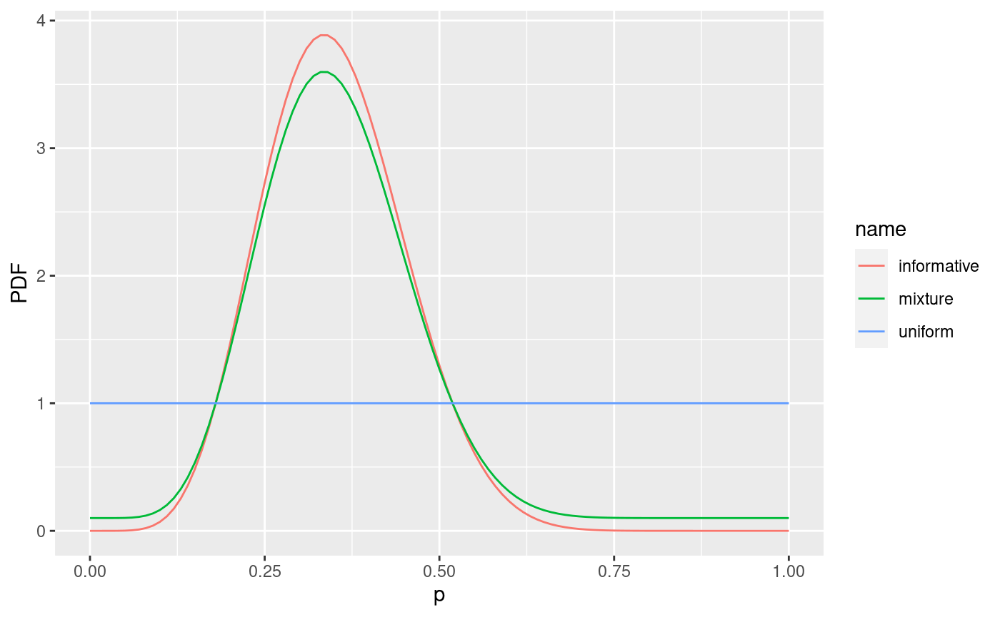
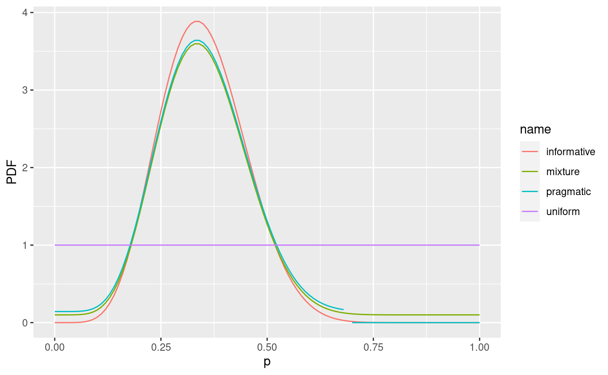
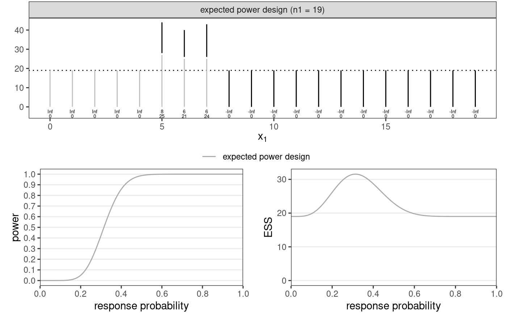

library(dplyr) #> #> Attaching package: 'dplyr' #> The following objects are masked from 'package:stats': #> #> filter, lag #> The following objects are masked from 'package:base': #> #> intersect, setdiff, setequal, union library(tidyr) library(ggplot2) library(badr) # make sure Julia is installed and found by JuliaCall package load_julia_package()
A mixture prior between an informative component and a uniform distribution is a good choice since it is more robust than just an informarive prior. The prior can be defined in terms of its mean and standard deviation.
informative <- Beta_mu_sd(mu = 0.35, sd = 0.1) noninformative <- Beta(1, 1) mixture <- 0.9*informative + 0.1*noninformative tbl_prior_densities <- tibble( p = seq(0, 1, by = .01), informative = density(informative, p), uniform = density(noninformative, p), mixture = density(mixture, p) ) %>% pivot_longer( -p, names_to = "name", values_to = "PDF" ) ggplot(tbl_prior_densities) + aes(p, PDF, color = name) + geom_line()

prior <- mixture <= 0.7 tbl_prior_densities <- bind_rows( tbl_prior_densities, tibble( p = seq(0, 1, by = .01), name = "pragmatic", PDF = density(prior, p) %>% ifelse(between(p, 0.69, 0.7), NA, .) ) ) ggplot(tbl_prior_densities) + aes(p, PDF, color = name) + geom_line()

design <- Problem( minimise(SampleSize(prior)), Power(prior %|% 0.2) <= 0.05, Power(prior >= 0.3) >= 0.8, label = "expected power design" ) %>% optimise_design()
plot_compare_designs(design)
